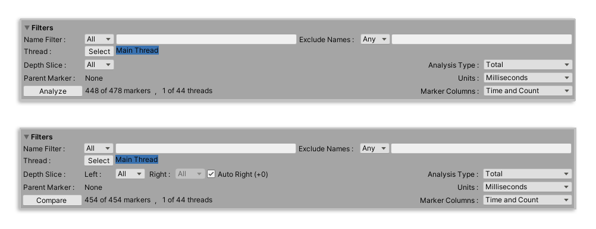
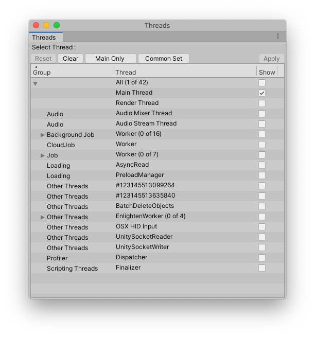
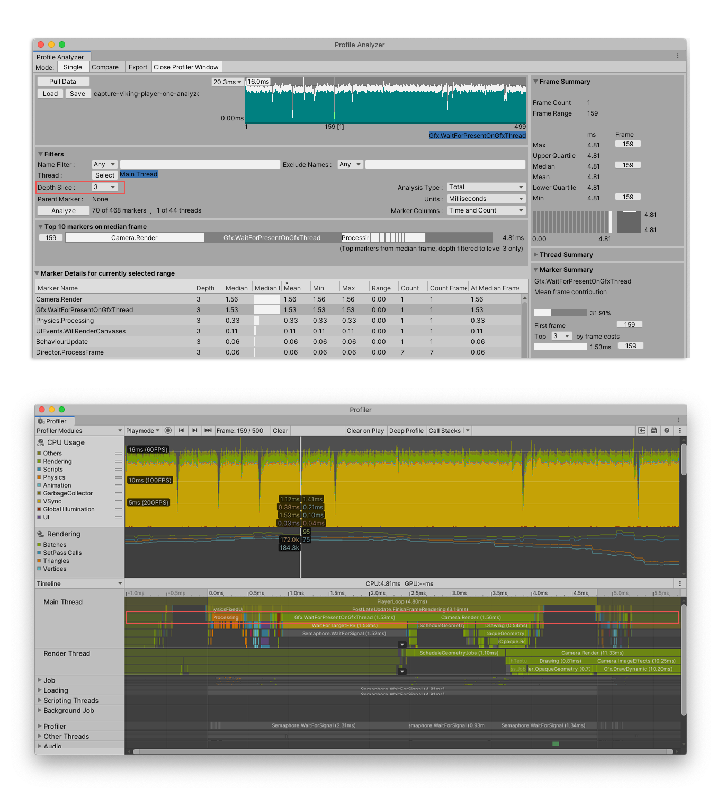
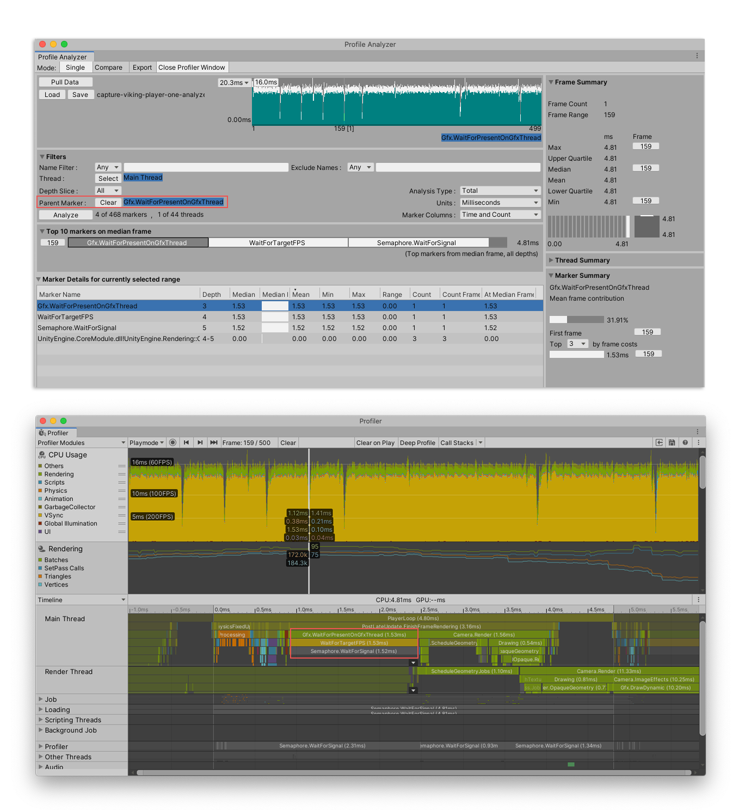

Filters pane¶
You can use the Filters pane in the Single and Compare view to reduce and filter the working data set. You can limit the data set by filters such as partial marker name match, a specific thread, or a specific stack level. As well as filtering by match, you can set the filter to exclude any markers by name. This is particularly useful to exclude markers the might distort the view, or aren’t statistically relevant.

Single view Filters pane (above) and Compare view Filters pane (below). Note the addition of further Depth Slice controls in the Compare view.
The pane has the following controls:
Control |
Function |
|---|---|
Name Filter |
Enter the name of a marker you would like to filter the data set by. Once you start typing, the Profile Analyzer automatically filters the Marker details pane to display the matching markers. You can also right click on a marker in the Marker details pane and select Add to Include Filter to add it to the filter. To include a marker name with a space, surround it in quotation marks |
Exclude Names |
Enter the name of a marker you would like to exclude from the data set. Once you start typing, the Profile Analyzer automatically filters the Marker details pane to display the matching markers. You can also right click on a marker in the Marker details pane and select Add to Exclude Filter to exclude it from the filter. |
Thread |
Select which thread or threads to filter the data set by. Click the Select button to open the Thread window and filter the data set further. For more information, see the Thread window section of this page. |
Depth Slice |
Set the depth level of the Hierarchy to display. The Marker Details/Comparison view then displays all the markers on this level only. In the Compare view, the Auto Right checkbox is enabled by default, which automatically aligns the depth of the two data sets. For more information, see the Depth Slice section of this page. |
Parent Marker |
Displays the parent marker the data set is filtered by. To filter by a parent marker, right click on it in the Marker Details/Comparison list and then select Set As Parent Marker Filter. For more information, see the Parent Marker section of this page. |
Analyze (Single view) |
Contains details of the number of markers and threads in the data set. Note: The button is redundant, because the Profile Analyzer automatically updates the marker pane with the filters you set. However, you can hover on the button to see timings of the analysis or comparison. |
Analysis type |
Select what times the Profile Analyzer includes in its analysis, from either Total or self. The Total option sets the marker times to inclusive, which means the time spent in the marker and its children is included in the filter. The Self option sets the marker times to exclusive, which means that the the time in the marker’s children is excluded from the filter. |
Units |
Select the unit of measurement of time to display in the Profile Analyzer. Choose between Milliseconds (default) or Microseconds. |
Marker Columns |
Select a layout for the Marker Details/Comparison pane. For more information on the columns in this pane, see the documentation on Single view Marker Details list and Compare view Marker Comparison list. |
Thread window¶
By default, the Profile Analyzer displays the markers on the main thread in the Marker Details/Comparison pane. To analyze the markers on other threads, under Threads, click the Select button, and the Threads window opens.

The Thread window
To add more threads to the analysis, enable the checkboxes next to their names, then click the Apply button. The Profile Analyzer then updates the data set. There are two pre-defined sets of threads: Main Only and Common Set. Main Only selects just the Main Thread, and the Common Set selects the Main Thread, plus the Render and Jobs threads.
Click the Clear button to clear all of the threads you’ve selected, and Reset to reset the selection back to the previous thread set.
Depth Slice¶
When you select a Depth Slice level in the dropdown, it corresponds to the level of the marker within the hierarchy of the thread. You can visualize this in the Profiler window as follows:

Top, the Profile Analyzer in the Single view with a Depth Slice of 3 selected in the Filters pane. Bottom, the Profiler window with the CPU Usage module selected, in Timeline view. Note that the markers in the Marker Details list correspond to the markers in the third level of the Main Thread’s hierarchy.
In the Compare view, the Profile Analyzer automatically aligns the depth of the two data sets so that the top level markers are aligned correctly. The value of the offset is displayed in brackets after the Auto Right checkbox.
To override the automatic depth alignment, disable the Auto Right checkbox and then manually set the depth levels for the left (blue) and right (orange) sets. This is useful if you’re comparing data sets from different versions of Unity.
Parent Marker¶
To filter the dataset by a specific marker and its children, right click on the marker in the Marker Details/Comparison pane and then select Set As Parent Marker Filter. You can visualize this in the Profiler window as follows:

Top, the Profile Analyzer in the Single view with the data filtered by the parent marker of Gfx.WaitForPresentOnGfxThread. Bottom, the same frame opened in the Profiler window, with this thread highlighted. Note that the markers in the Timeline view correspond to those filtered in the Profile Analyzer.